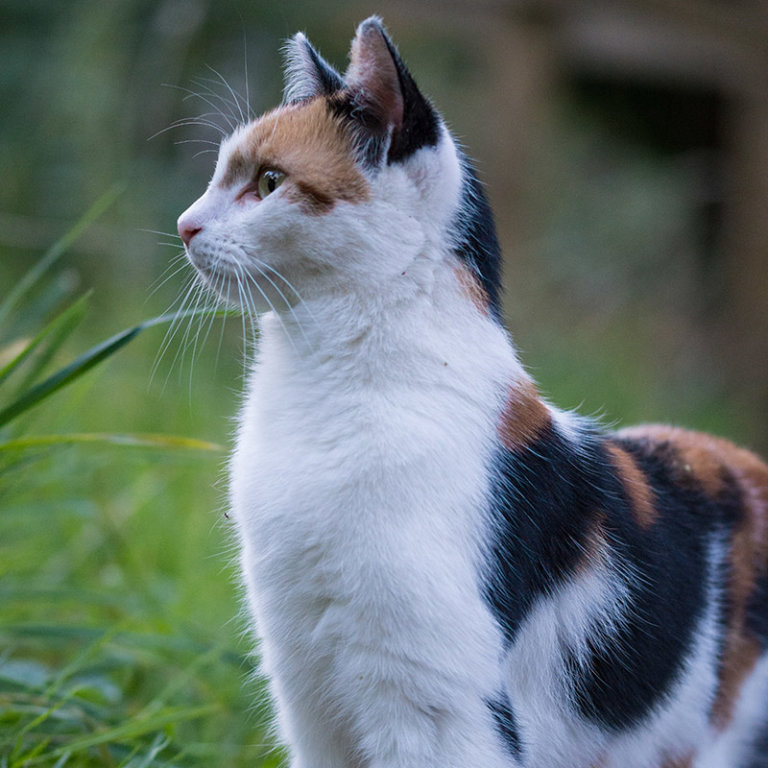
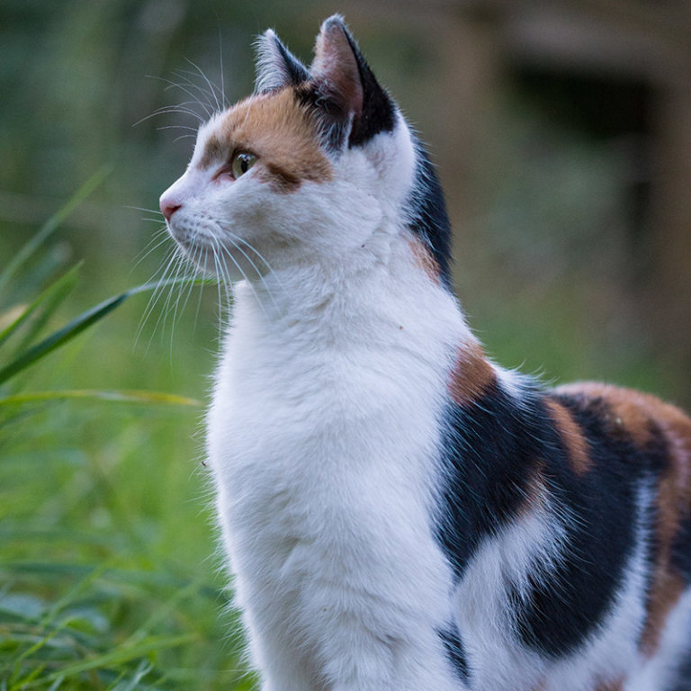

Hola que tal, como dice en el titulo mi nombre es Franco, provengo de formosa una porvincia de argentina chica y calurosa. A los tres meses de nacido me fui a Buenos Aires, pero no duramos mucho ahi, a tan solo 3 años que tenia nos volvimos a mudar de provincia, justamente a Neuquen donde vivo actualmente. Siempre me consideraron un chico estudioso, actualmente estoy en una EPET estudiando programacion. Me gusta mucho los animales, tanto que tengo 3 perros y 4 gatos, mi familia esta conformada de 4 integrantes mi hermano mis padres y yo.
Puedo concluir que tengo una vida muy normal, pero no es lo que aspiro, aspiro una vida con varios ingresos y poder viajar a donde quiera.
mi red social favorita es instagram
 
